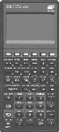

The Astronomical Companion
for the
HP-48SX/GX, HP-49G/G+, and HP-50G Pocket Calculator series

Urania is a complete portable ephemeris calculator
based
on the Hewlett-Packard HP-48SX, HP-48GX, HP-49G, HP-49G+ or HP-50G
Pocket Calculator series. Due to RAM requirements, it requires memory
extension cards on HP-48SX/GX series and will not work on unmodified
HP-48S, HP-48G, or HP-48GII calculators.
For outdoor astronomy, nothing can beat a small, lightweight
calculator with built-in clock for doing those error-prone
calculations like sidereal time, planetary positions, coordinate
transformation, Hour Angle, and much more. All this and lots more is
included with Urania and will work on a tour even of
several weeks duration with a single set of batteries in contrast to
- say - a notebook PC running admittedly more extensive software, but
only for a few hours.
With its total of about 500kB programs and data,
Urania is the answer to the following and many more questions:
- Valid dates from -4712 to 9999
- Gregorian Calendar / Julian Day Number (JD) conversion,
extended date arithmetic, Week Day for every date,
day number within the year, date of Easter
- Sidereal Time for each date
- Running clock with current Sidereal Time
- Running clock display with Date, Time, Sidereal Time,
Hour Angle, Declination, Azimuth and Altitude of a
celestial object, corrected for atmospheric refraction
- Coordinate Transformations: Equatorial - Ecliptical,
Equatorial - Galactic, Hour Angle/Declination - Azimuth/Altitude
- Angular distance between celestial bodies
- Rise, Transit and Setting time of objects
- Calculation with sidereal magnitudes
- Search programs:
- Sun, Moon, Planets, Asteroids and Comets (Orbital data for
asteroids and comets are easily entered by the user once and
are then stored for further use). Planetary positions are
calculated using a shortened version of the VSOP87 theory of
planetary motion to usually sub-arcminute precision.
Data:
Planets:
- Heliocentric and Geocentric Ecliptical coordinates
- Elongation from the Sun
- visual magnitude
- distance from Sun and Earth
- angular diameter
Sun: Physical Ephemeris after Carrington
Moon:
- Geocentric and Topocentric position
- Physical Ephemeris (Libration etc.)
- Stars:
- Complete catalogue of stars to mag 3.0,
including at least one star of each constellation,
summing up to 328 stars. Select with Bayer letter,
proper name (several versions of spelling allowed!)
or parts of it.
Data: Position, apparent (V) and absolute magnitude,
Spectral Class, (B-V) color index, distance
- Selected Variable and Multiple stars.
These catalogues can be replaced/enlarged by the user.
- Deep Sky:
- Complete Messier Catalogue.
- Selected other DSOs. (List expandable by the user.)
- Add-on libraries provide data to the whole RNGC
catalogue, so now more than 8000 objects are available!
- All search programs provide:
- Equatorial coordinates for Date and for J2000.0
- Times of Rise, Transit and Set
- Azimuth, Altitude and Hour Angle of object
- Map number of object in Sky Atlas 2000.0 and
Uranometria 2000.0
- Date, Time, Julian Day (JD), used coordinates of user
- Coordinates of date remain on the calculator's stack to be fed
to the Hour Angle Clock which will give continously updated
display of position.
- Twilight times
- Planisphere and Horizontal Map
- Positions of the planets relative to the Sun (Ecliptical Map)
- Calculation of Solar and Lunar Eclipses
- Beginnings of the Seasons
- Times of Aphelion and Perihelion transits of the Planets
- Equation of Time, and the Analemma figure and position
of the Sun on it for each date
- Jupiter: Central meridians I and II,
Position of the 4 largest moons and of the Great Red Spot.
In addition to all this, there are several more add-on libraries:
- Moon: Times of Phases, Passages through the Nodes,
Apogee/Perigee transits, maximal Northern and Southern
Declinations, Angular Speed in the Sky, Altitude of the Sun
above a lunar position
- Saturn: Saturn and its 8 greatest moons
- RNGC: Yes: The Revised New General
Catalogue of Deep Sky Objects is now right at
hand in a pocket calculator! (not for HP-48SX)
- Calculation of the most important planetary phenomena
(Conjunctions, Oppositions etc.) for a selected year.
- Users may write own programs and use the internal
procedures to save developing time and memory.
Most internal routines are therefore accessible with
the UTools(+) library.
Precession (in FK4, FK5 and in ecliptical coordinates),
Nutation, heliocentric coordinates and orbital elements
of the Planets, Equation of Kepler are just a few
examples for these tools.
- Some program examples are provided, including
Phases, an example library provided
with User-RPL source code, showing the phase images
of Moon, Venus, Mercury, Mars and Saturn with its rings!
- The QVSOP library
gives fast positions for the giant planets. This one is free for
everyone!
Urania was developed mainly for the HP-48GX, and is now
maintained for HP-48GX and HP-49G/HP-50 (The version for
HP-49G also runs on the newer HP-49G+ and HP-50G).
Have a look at some output examples
Have a look into the manual! (Urania.pdf, 490kB) Requires Acrobat Reader
Read about the program history
Users about Urania
Finally in 2014: Free Download!
More HP48/HP49 software:
www.hpcalc.org
Back to HP page
Back to home page
© Georg ZOTTI, 2000 - 3 - 12. Last changed 2026 - 5 - 18